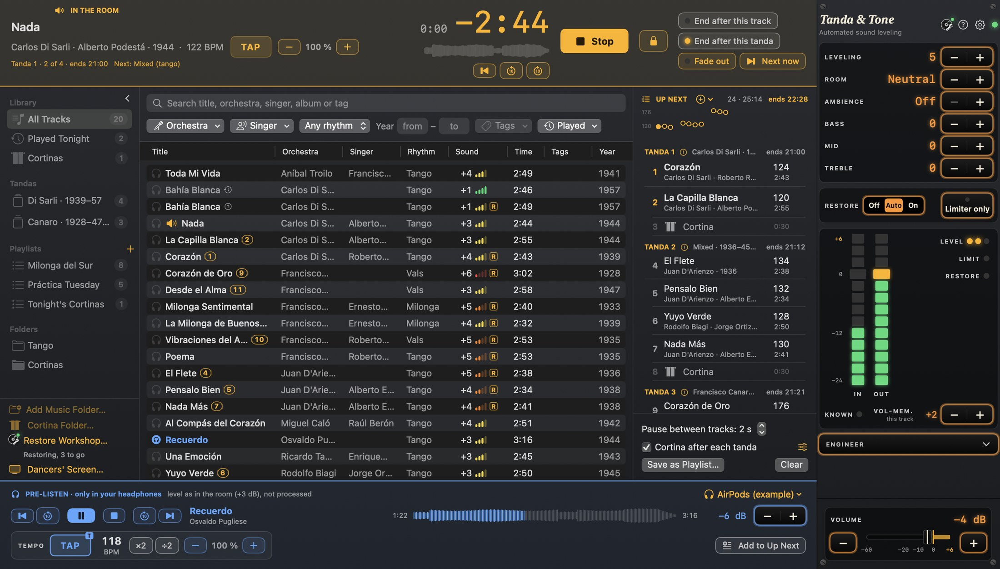

Getting started
Set up once, at home
Tanda & Tone plays its own files only. It does not take the sound of any other app, so macOS asks for no permission when you open it.
Connect the PA
A cable from the Mac's headphone jack to a line input on the mixer, not a microphone input.
Add your music
Press Add Music Folder… under the library and choose the folder with your tangos, valses and milongas. The files stay where they are and are never changed.
Choose your cortinas
Press Choose Cortina Folder… and choose the folder with your cortinas.
Connect your headphones
A USB headphone adapter or Bluetooth headphones, for pre-listen. The Mac's own jack goes to the room.
Set the mixer gain once
By ear. Every track comes out at the same loudness, so that one setting holds for the evening.
Press Play
Put a tanda in Up Next and press Play. The room starts, and the sound is looked after from the first note.
Let it listen first. After you add a folder, Tanda & Tone listens through every track in the background, so each track's level is known before you play it. Let it finish at home, overnight if the library is large. The bottom of the sidebar shows how far it has come.
Tandas and cortinas
Building the evening in Up Next
Up Next is the right-hand column: what the room plays next, in order. Tandas show as groups, with their orchestra, years and count, and the time each one ends.
Adding a tanda
Select the tracks in the library, right-click and choose Add as Tanda (⇧Return). They go to the end of Up Next as one tanda, and a cortina follows it. Drag rows to change the order.
A set from a template
The + beside UP NEXT has New set: T T V T T M. It lays out empty slots with a cortina after each. Drag the tracks of a tanda onto a slot and it fills. The room stops at a slot that is still empty, so fill them before the evening.
Cortinas
When the room reaches a cortina row it plays the next cortina from your folder, for a set length, and fades it out. Cortina Settings… in the + menu sets the order (in order or at random), how long each plays (30 s to start with), the fade and the level (a little below the music).
Pause between tracks
Under Up Next: the silence between two tracks, 2 s to start with. It is counted from the last music of one track to the first music of the next, so the silence in the files does not change it.
Hints on a tanda
A small ! beside a tanda means something stands out: more than one orchestra, different singers, many years apart, an unusual number of tracks, mixed rhythms or a big change of tempo. Point at it to read which. It is a hint, never a block.
Ending after a tanda
End after this tanda lets the tanda play to its last track, then the room goes quiet before the cortina, for an announcement or a break. End after this track does the same after the track in the room.
During the evening
Amber is the room, blue is only your headphones

The room
The bar along the top shows the track in the room, the time left in large digits, which tanda you are in and when it ends, and the next tanda. Play starts the room, Fade out (F) ends a track or a cortina softly, and Next now (N) cuts to the next track.
Your headphones
Double-click a track in the library, or select it and press Space, to hear it in your headphones. Nothing blue ever reaches the room. You hear each track at about the level the room will give it.
The lock
The padlock beside Stop (⌘L) guards against a slip of the hand. Locked, Stop and Next now need a short hold. Fade out, the headphones and the library stay one click.
A checklist for the evening
- At home: let the background listening finish, and fill every slot of a template set.
- Before the doors open: the cable in the headphone jack, your headphones connected, the mixer gain set by ear on one track.
- On the Mac: leave the app's Volume at 0 and use the mixer's fader. Turn on Focus, so no notification sounds reach the PA.
- The lock on once the first tanda plays.
- A reserve on its own mixer channel, such as a phone with a playlist, as with any setup.
- Afterwards: the + beside UP NEXT has Export Tonight…, which saves the evening's set as a text list and a playlist file.
The sound
The controls are for taste
You do not set the sound for each track. Every track is brought to the same level, with the music's own dynamics kept: a soft passage comes up a little, a build still builds and a pause is never filled. Harsh transfers are softened, worn ones are cleaned up and the PA is protected. The controls on the sound card, along the right edge, are there when you want something different.
| Control | What it does |
|---|---|
| Leveling | How much the level is looked after, from Soft through 1–9 to Strict. Soft is the lightest touch: it leaves the most of the music's own dynamics, and more of the difference between a loud and a quiet recording. The middle, 5, is where it starts. |
| Room | The room the PA stands in, from Padded through Neutral to Boomy. Boomy brings the bass down for a reverberant hall; Padded brings warmth and air back to a damped room. |
| Ambience | A small room added to a very dry recording. Off leaves the sound alone. |
| Bass · Mid · Treble | Up to 6 dB either way, for the touch of tone you want for this room or this orchestra. All three are at 0 every time the app opens. |
| Restore | Off, Auto or On: cleanup of clicks, crackle and hiss while a track plays. Auto decides for each track; most DJs leave it there. |
| Limiter only | For a track where the processing sounds wrong: this track then gets only the level match and the limiter. Press it again to go back. |
| Vol-mem. this track | Sets this track a little higher or lower, and remembers it for the track's next play. |
| Volume | The Mac's own output volume. With a mixer, leave it at 0 and use the mixer's fader. |
The Sound column in the library
For each track: how much the room will lift it or turn it down, the recording's grade as coloured bars, and an amber R when Restore in Auto will clean it. A dot means the track has not been listened to yet.
Slower for class
The amber − 100 % + at the top changes the tempo of the track in the room, from 70 to 110 %, with the pitch kept. The blue one changes the track in your headphones, so you can choose the tempo before the class hears it. Double-click the percent to go back to 100 %.
The Restore Workshop
New copies of your worst transfers
Restore cleans a worn record while it plays. The workshop goes further, ahead of the evening: it restores whole recordings and writes each as a new file. Your originals never change, and the player plays the restored copy in place of the original.
Open the workshop
Restore Workshop… under the library (⇧⌘R), and choose where the restored files should go.
Add recordings
Add files or folders, or right-click tracks in the library and choose Restore a Copy….
Press Start
While music plays in the room, the workshop waits, so the room always comes first.
| Mark | What it means |
|---|---|
| Restored | The copy is written and plays in place of the original. |
| Restored: listen before you play it | The copy is written, but hear it before the evening. The row says what to listen for. |
| Not restored | Even the gentlest treatment would harm the music, so nothing is written. |
Questions
Common questions
The room went quiet, or the app closed
Open Tanda & Tone again. It offers Go On from There, with the same Up Next and the track where it was. Tanda & Tone is the player, so nothing else plays while it is closed: keep a reserve on its own mixer channel.
The room stopped by itself
It reached an empty slot of a template set, or End after this tanda was on. Fill the slot or press Play to go on.
Pre-listen has no headphones to choose
Pre-listen needs headphones on a device of their own: a USB headphone adapter or Bluetooth headphones. The Mac's own jack goes to the room and is never used for pre-listen. They appear in the blue bar as soon as they are connected.
A track sounds wrong
Press Limiter only for that track, and tell me which recording it was. If a track is only a little too loud or too quiet, use Vol-mem. this track: it is remembered for the next play.
Soft passages are lifted too much, or not enough
Engineer (⇧⌘E) has Quiet lift: the most a long, soft passage is lifted. Set it to 0 to switch that lift off, or higher for a room where soft passages get lost, and press Apply. A pause is never lifted, whatever it says.
The orchestra, singer or rhythm of a track is missing or wrong
Select the track (or several), right-click and choose Set Orchestra…, Set Singer…, Set Rhythm or Set Year…. Your corrections are kept in the app and never written to the files.
A notification sound reached the PA
While it runs, Tanda & Tone moves the Mac's alert sounds to the Mac's own speakers. Turn on Focus for the evening as well, and leave the output in System Settings → Sound on Headphones.
Can I play to an AirPlay speaker?
At home, yes: Setup → Output → Same as the system output. It adds about two seconds of delay, so use the cable at a milonga.
Does Tanda & Tone record or upload my music?
No. It never records or stores sound, and it works offline. See the privacy policy.
Keyboard shortcuts
| Keys | Action |
|---|---|
| F | Fade out the room's track, also during a cortina |
| N | Next now (not while locked) |
| ⌘. | Stop the room (not while locked) |
| ⌘L | Lock or unlock Stop and Next now |
| Return | Add the selected tracks to Up Next |
| ⇧Return | Add the selected tracks as a tanda |
| Space | Pre-listen the selected track |
| [ / ] | Pre-listen the previous / next track |
| ⌘↑ / ⌘↓ | Volume up / down |
| ⌘F | Search the library |
| ⇧⌘R | Restore Workshop |
| ⌘, | Setup |
| ⌘? | The manual |
Purchases
Try it free, buy it once
14 days free
The first Play offers a free trial with everything working. It never ends in the middle of an evening, and never turns into a purchase by itself.
One purchase
After the trial, one purchase unlocks Tanda & Tone for good: one per Apple ID, for all your Macs. No subscription.
A new Mac
Use Setup → Purchase → Restore Purchases. Payments and refunds are handled by Apple's App Store.
Still stuck, or something sounds wrong?
Write to Christian Melby Bjørn, who makes Tanda & Tone. Say which track it was and what you heard. Tools → Show Logs in Finder opens the folder to send along; it holds numbers and track names, never any sound.